Part 1 covered supervising the agent in conversation. This part covers the other half of Katie's tooling: seeing every SMS that has not fired yet. The queued, the scheduled, and the ones agents will fire when a creator meets criteria, plus how those messages link into flows. 34 verified screenshots from the systems that visualize this best: Klaviyo, Braze, Customer.io, Attentive, Postscript, Twilio Studio, HubSpot, ActiveCampaign, Intercom Series, OneSignal, Buffer and n8n.
"Show me everything that's going to fire" is actually four different questions, and they need four different pictures. The field mostly ships all four; the mistake would be building one screen that half-answers each.
View 1 · a tableWhat automations exist, and are they on?The registry. Would have caught the 28 Litsea bug: reminders live for MD, silently dead for 28 Litsea.
View 2 · a queueWhat fires next, concretely?Time-ordered upcoming sends with hold and cancel. Would have caught the invite text firing instantly instead of after 2h.
View 3 · a mapHow do messages chain?The flow canvas: trigger, wait, condition, message. The "low-code look", generated from the real rules.
View 4 · a timelineWhat is coming for THIS creator?The per-person path: what she got, where she is, what is queued for her and under which condition.
Method note. Same rules as Part 1: images downloaded Aug 25, 2026 from each vendor's own docs, help center or site, verified by eye, captions describe only what is visible and link to the source. real ui genuine product screenshot · render vendor's stylized recreation · recreation our own Benable mock. 84 shots collected, the 34 strongest shown.
1The canvas: the low-code look, and what belongs on a node
Klaviyo · Attentive · Twilio Studio · ActiveCampaign · n8n · Intercom Series
Every serious messaging system converged on the same drawing: trigger on top, messages as cards, waits and splits between them. What separates the good ones is how much truth the node face carries: the actual first line of copy, the channel, the live status, and the outcome branches.
Klaviyo · Flow builder
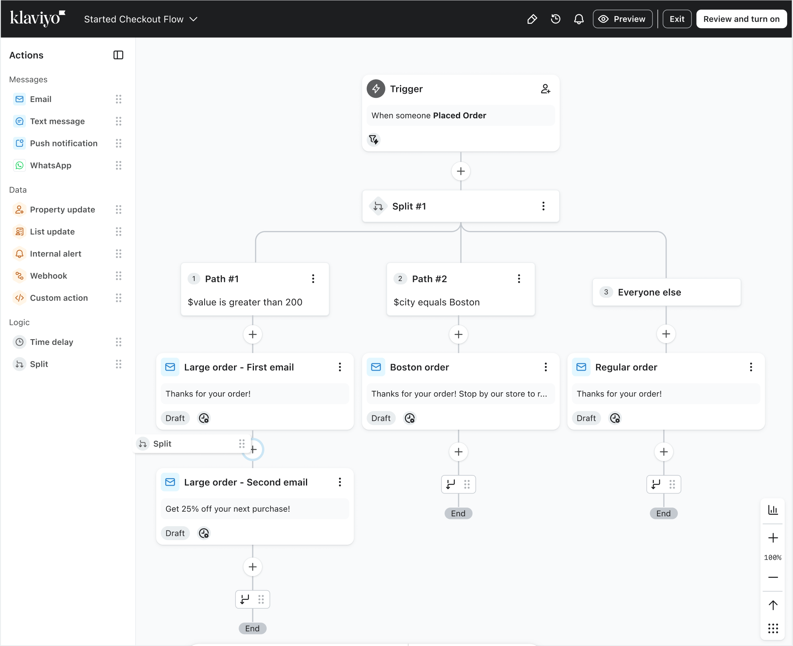
real uiThe reference canvas: a trigger ("When someone Placed Order") feeding a split with three condition cards, each path ending in a message node that shows its actual subject line and a Draft/Live status chip. The whole conditional send plan reads without opening anything. source
Attentive · Journey
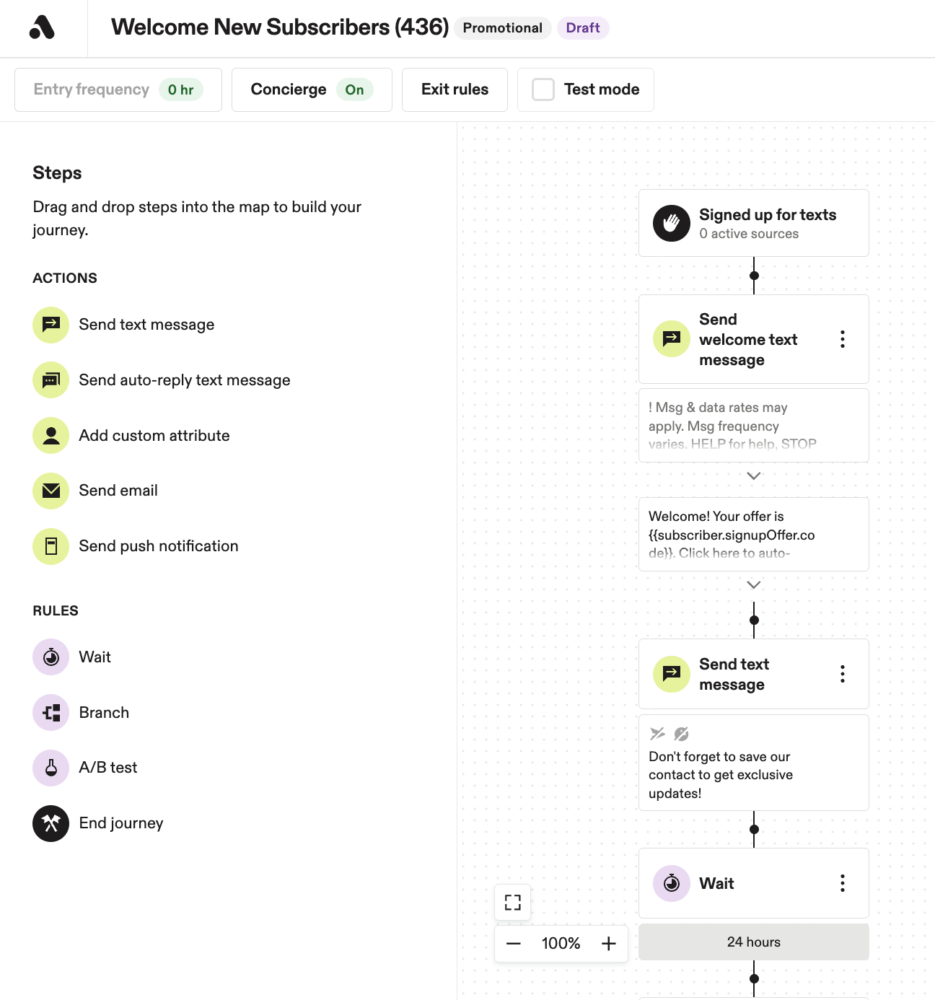
real uiSMS-first version: a vertical spine where the welcome text's real copy (compliance line included) is readable inside its node, with journey-level chips on top: entry frequency, Concierge on, exit rules, and a test mode checkbox. source
Twilio Studio
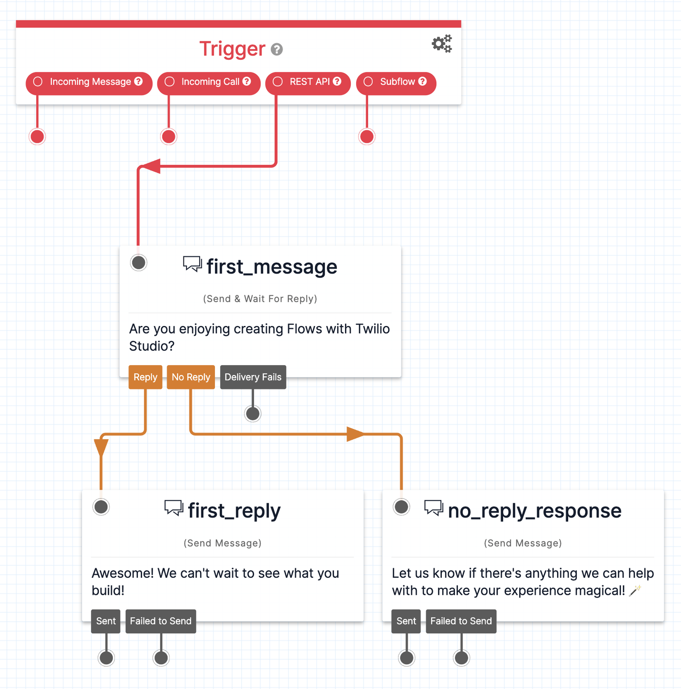
real uiEvery message node wears its outcome branches as labeled chips on its bottom edge: Reply / No Reply / Delivery Fails. What happens on each possible creator response is readable at a glance, including the failure path. source
ActiveCampaign
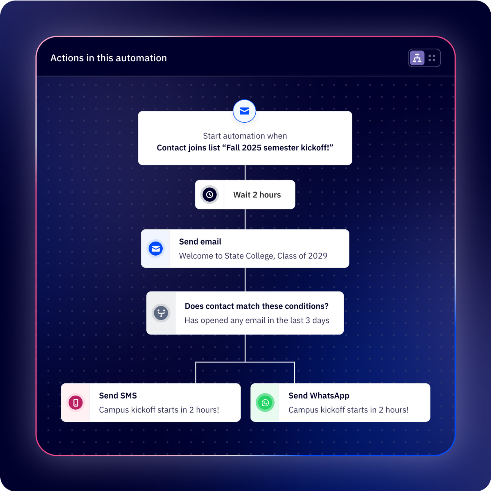
renderKatie's exact shape in one card: trigger, wait 2 hours, send email, then "has opened in the last 3 days?" forking into SMS vs WhatsApp with channel-colored icons. Timer, engagement check, channel fork. source
n8n · Agent node
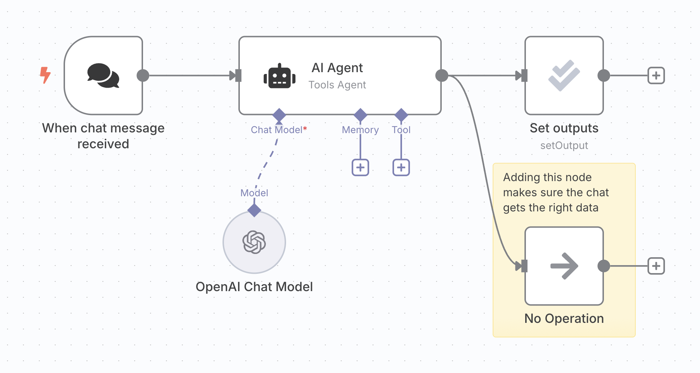
real uiThe agent-era detail: the AI node's machinery (model, memory, tools) hangs below it as dashed, typed sub-connectors, visually separate from the solid path the message travels. The brain and the send path are distinguishable at a glance. source
Intercom · Series
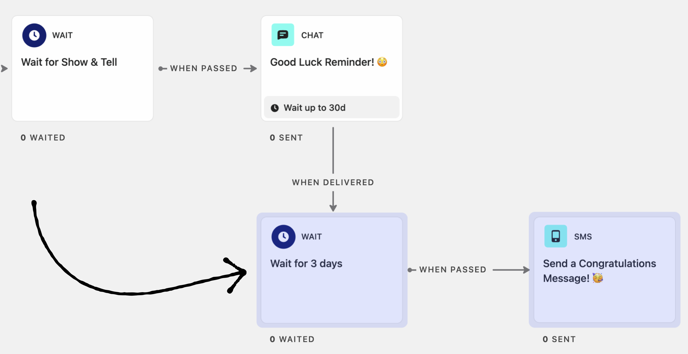
real uiBlocks that changed since you last looked are tinted purple, with a "hide highlighted changes" toggle, and SMS is a first-class node. For flows that agents edit, this is the killer feature: open the canvas, instantly see what the machine changed. source
In the command center: our flows are stage-driven, not drip sequences, so the honest canvas is the campaign stage ladder as a spine, message nodes hanging off each transition and timer, one swimlane per fork (product, local, brand-reviews-content). Node face shows: intent name, the base copy's first line, channel, Live/Draft/Held, and Twilio-Studio-style outcome chips. Agent-edited nodes get the Intercom purple tint.
2Criteria, waits, and the rules that cancel a send
"The agents will fire if the creators fill different criteria" is exactly what these panels draw. The best pattern makes eligibility one readable sentence stack, waits into visible nodes with escape hatches, and, most important for trust, puts everything that cancels a pending message in one place.
Postscript · Entry rules
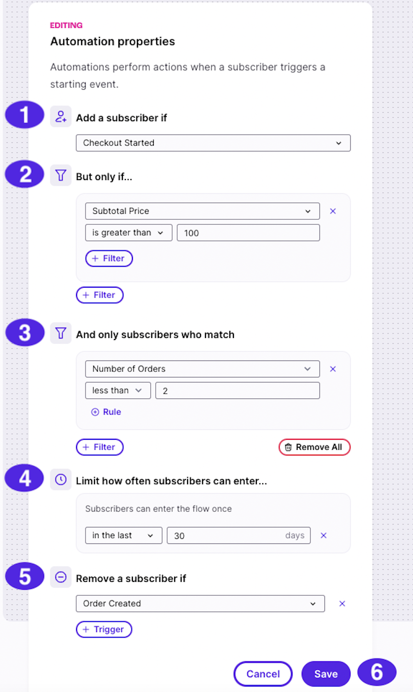
real uiEligibility as one stacked sentence: add a subscriber if (Checkout Started), but only if (subtotal over 100), and only those who match (under 2 orders), limit re-entry (once per 30 days), remove if (Order Created). Who gets pulled in, and what ejects them, in one column. source
Klaviyo · Split details
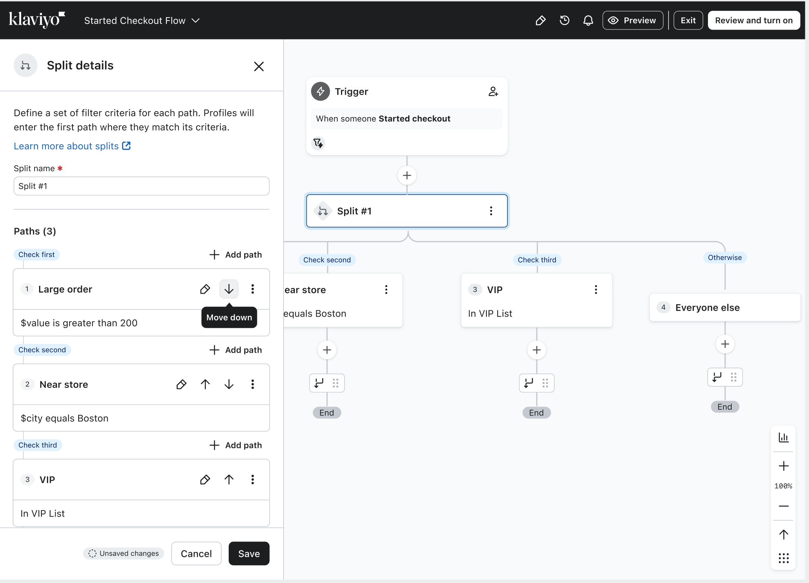
real uiBranch rules as an explicitly ordered checklist ("Check first / Check second / Otherwise") with reorder arrows, mirrored onto the canvas branches. The priority logic deciding which message someone gets is readable and reorderable. source
Customer.io · Wait until
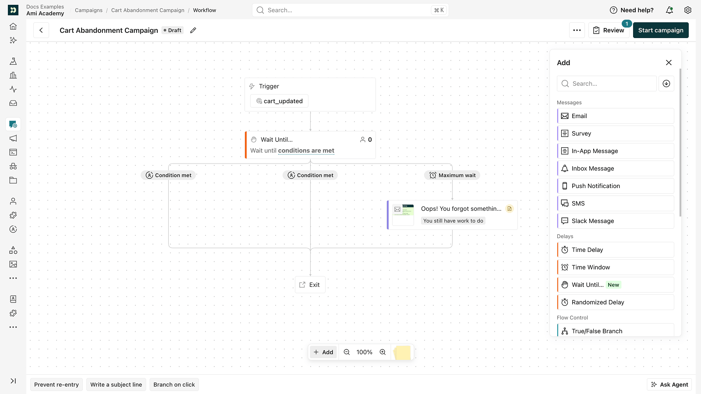
real ui"Send only if they still haven't acted" drawn honestly: a Wait Until node with separate exit lanes for "condition met" vs "maximum wait". The escape hatch (creator replied, posted, ghosted) is on the map, not hidden in message settings. source
Attentive · Exit rules
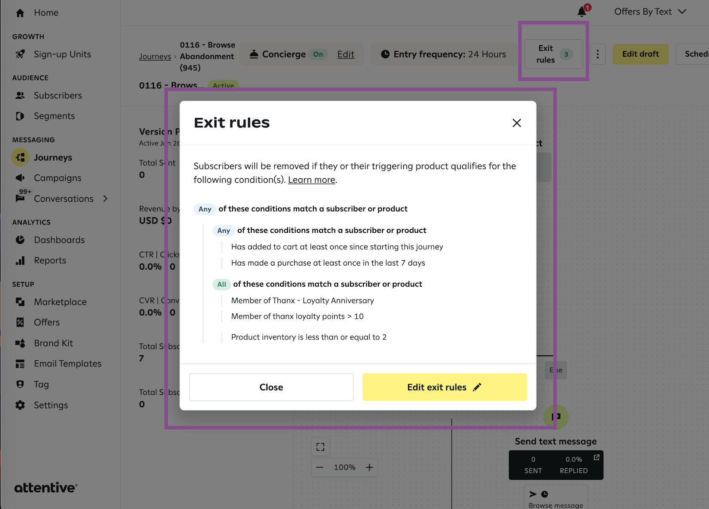
real uiThe journey-level exit panel: nested Any/All groups listing everything that removes someone ("has added to cart since starting", "has purchased in the last 7 days"). One place that answers "why will this creator NOT get the next nudge". source
OneSignal · Exit rules
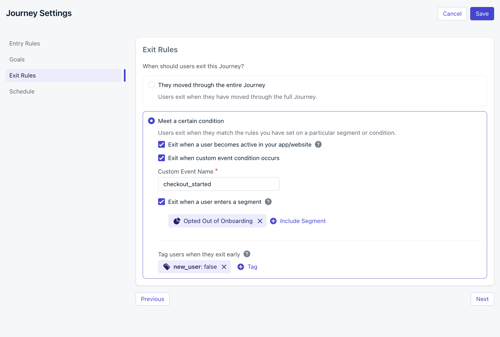
real uiThe kill-switch panel: exact events, segments and conditions that stop the messages, plus a tag stamped on anyone who exits early, so departures are queryable afterward. source
In the command center: every automation's page opens with its Postscript-style sentence stack: fires when, but only if, held while, canceled by. The "canceled by" list is where the intelligence layer becomes visible: away-until-Wednesday, already replied, consent missing, thread owned by Katie. That list is precisely what was missing when the vacationing creator still got her 3-day reminder.
3The registry: everything armed, in one table
Klaviyo · HubSpot · Attentive · ActiveCampaign
The Aug 17 to-do was literally this: "a live dashboard of every automation". The field ships it as a filterable table where every row wears its trigger sentence and an unmissable on/off state. The Benable twist no vendor ships: our automations vary per brand, so the registry needs a second axis.
Klaviyo · Flows list
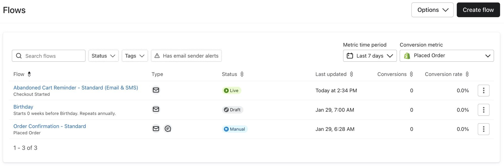
real uiEvery flow as one row: name, its trigger restated as a subtitle ("Checkout Started", "Starts 0 weeks before Birthday, repeats annually"), channel icons, and a three-state Live / Manual / Draft badge. The inventory of everything that can message a person. source
HubSpot · Workflows index
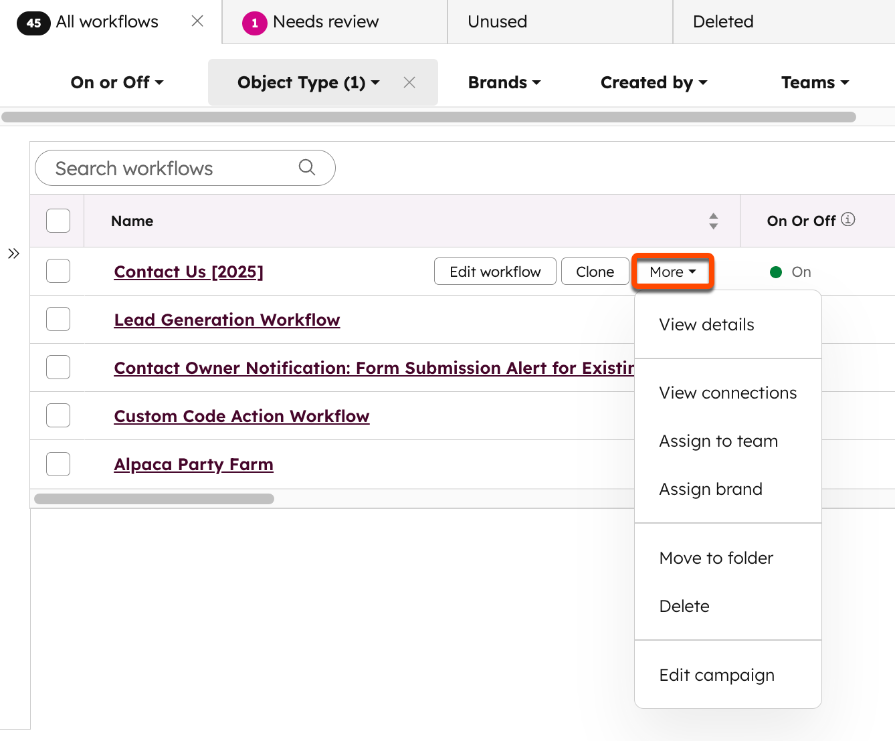
real uiThe index with saved-view tabs including a counted "Needs review" tab, an On/Off column with green dots, and per-row actions. Auditing which flows are armed is a table scan, and flipping one off never requires entering the builder. source
Attentive · Journeys list
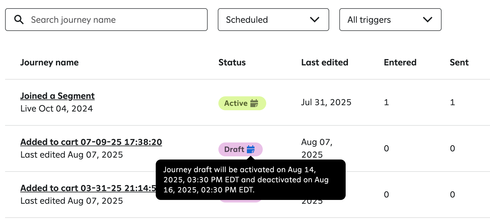
real uiThe status pill itself carries a calendar badge; hovering reveals the exact activation window ("will be activated on Aug 14, 03:30 PM and deactivated Aug 16"). Time-boxed automations announce their own schedule. source
ActiveCampaign · Picker
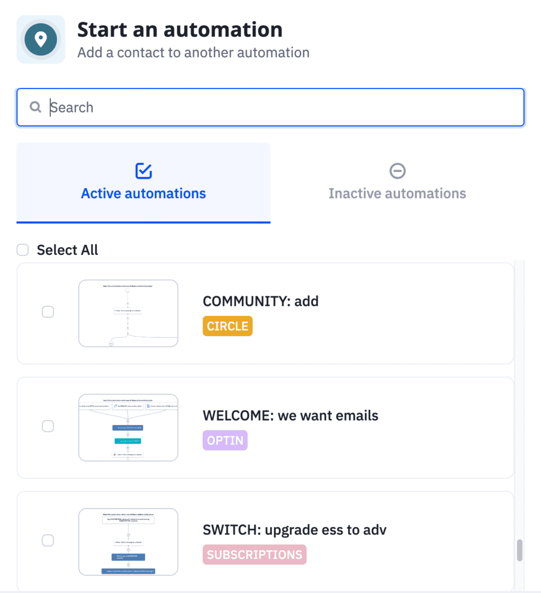
real uiEach automation rendered as a tiny thumbnail of its own flow diagram next to its name and category chip. A registry you can visually recognize, and chaining ("this flow starts that one") becomes a checkbox. source
ActiveCampaign · Map
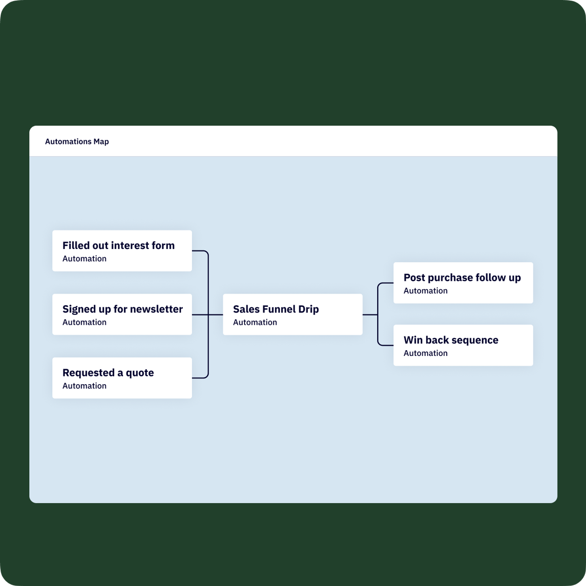
renderThe meta-map: whole automations as single nodes, edges meaning "this flow enrolls people into that one". The top layer showing how re-invite, reminder and wrap-up flows hand creators to each other. Their detail shelf adds a STARTS / IS STARTED BY / ENDS grammar with a live in-flight count. source
The Benable twist: automations × brands
Automation
MD Solar
28 Litsea
Celeste
Trilogy
Portal invite text
●
●
●
◐
Product shipped
●
●
●
○
Content reminder 5d/3d
●
!
●
○
Overdue nudge
●
!
●
○
Re-invite window
◐
○
●
○
● live ◐ paused ○ off ! live but zero sends in 7 days
recreationThe one view no vendor ships, because no vendor has our shape: the same automation can be live for one brand and silently dead for another. The red ! cell is a health state, not a config state: "this says live, but nothing has fired in 7 days for an active brand." That cell is the 28 Litsea bug, caught by a table instead of by Katie's memory.
In the command center: the registry is this matrix. Rows are intents, columns are active brands, cells are live / paused / off / suspicious. Click a cell to see that brand's version of the flow and its last 10 sends. Row click gives the Klaviyo trigger sentence and the ActiveCampaign-style STARTS / STARTED BY / ENDS links. Katie's pause action from the Aug 18 call ("stop this onboarding text for this population") is a cell toggle here.
4What fires next: the queue, the calendar, the countdown
The flow map answers "how does it work"; this view answers "what exactly goes out, to whom, at what time". Katie paused the invite text precisely because she could not see its fire times. The field has three shapes for it: the per-recipient table, the per-person countdown roster, and the calendar.
Klaviyo · Recipients
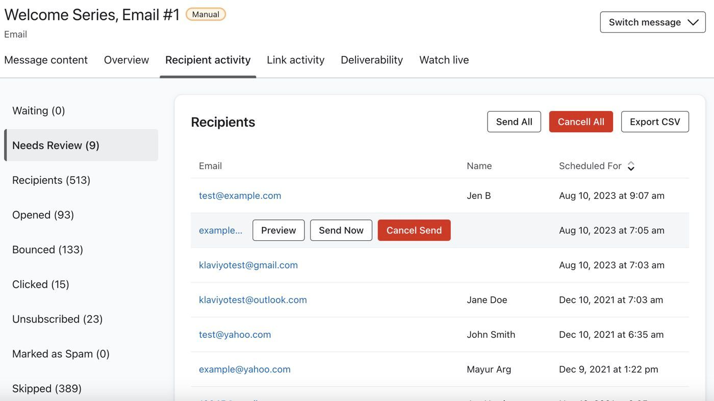
real uiThe money shot: every queued message as a row with the person, the exact "Scheduled For" timestamp, and per-row Preview / Send Now / Cancel Send, plus a counted "Needs Review" bucket. A queue Katie can actually intervene in, one message at a time. source
Customer.io · Journeys
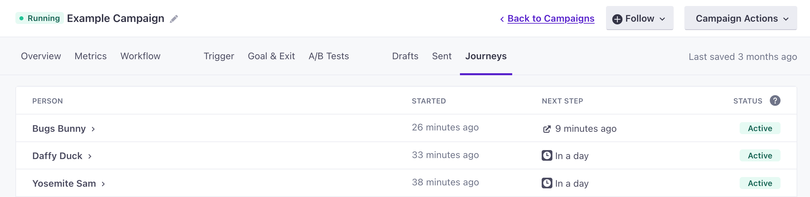
real uiThe minimum viable queue: everyone currently inside an automation, one row each, with a NEXT STEP countdown column ("In a day"). Who is in the flow and when the next message is due, without opening the canvas. source
Buffer · Calendar
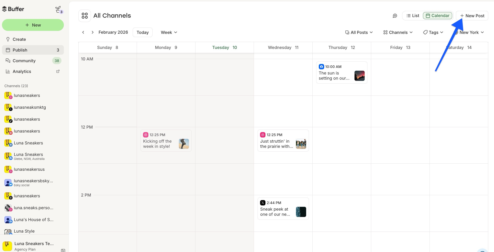
real uiEverything scheduled, placed at its true hour on a week grid, copy preview readable in the cell. The time-of-day audit: three texts landing on one creator in the same lunchtime window is visible before it happens. source
Postscript · Delay
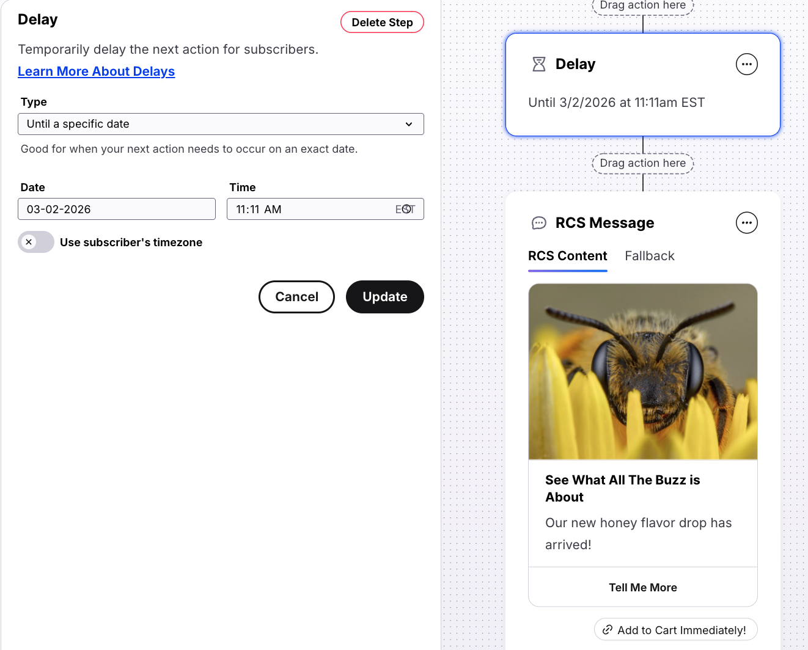
real uiThe wait node states its resolved moment in plain words ("Until 3/2/2026 at 11:11am EST") with a per-recipient-timezone toggle. "When will this actually fire, in whose clock" answered on the node itself. source
OneSignal · Time window
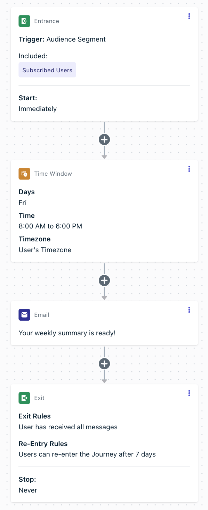
real uiSend timing as a first-class Time Window node in the path: "Fri, 8:00 AM to 6:00 PM, user's timezone". Our quiet-hours rule, drawn on the map instead of buried in middleware. source
In the command center: a "Next 24 hours" tab: Klaviyo's table (creator, intent, campaign, fire time, hold and cancel per row) grouped by hour, with Buffer's week calendar as the zoomed-out view for wave planning (re-invite blasts, launch days). Every row links to the ghost bubble in that creator's thread. Quiet hours render as shaded bands on the calendar so held night sends are visibly parked, not missing.
5Counts on the map: the canvas as the monitor
Klaviyo · Intercom Series · Attentive · Braze · n8n
Once numbers live on the nodes, the same drawing that defines the flow becomes the dashboard that watches it. This is Brian's "surfacing abnormalities" rendered spatially: creators piling up at a wait step, or a branch quietly sending zero.
Klaviyo · Analytics mode
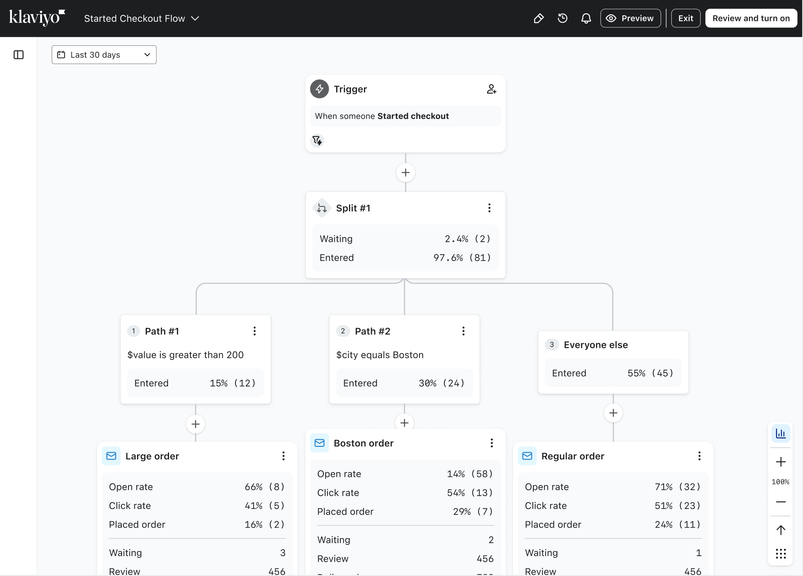
real uiThe same canvas in analytics mode: the split shows Waiting and Entered percentages, each branch card shows how many entered it, each message node its own stats block. Where people pile up or leak out, in place. source
Intercom · Series
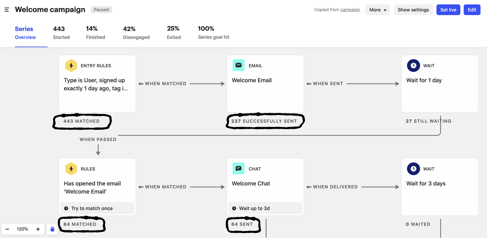
real uiLive throughput under every node (443 matched, 237 sent, 27 still waiting) with edge labels naming the advancing event (WHEN SENT, WHEN PASSED), and a funnel strip on top (Started, Finished, Disengaged, Exited). source
Attentive · Performance
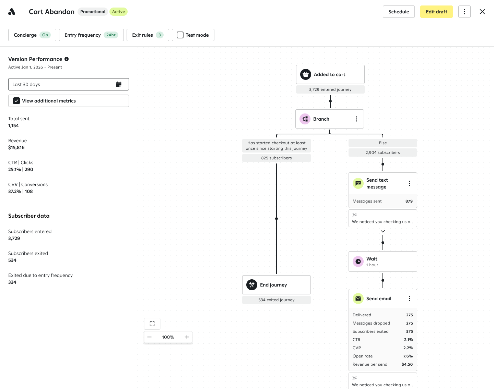
real uiCounts on the branch edges themselves ("has started checkout: 825 subscribers" vs "Else: 2,904"), plus an honest "exited due to entry frequency: 334" in the side panel. The rate-limit's cost is a visible number. source
Braze · Canvas
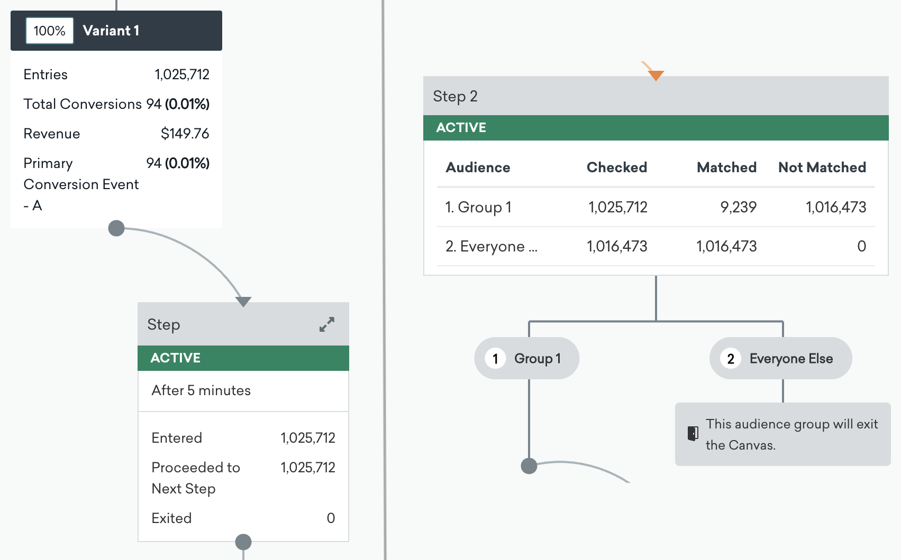
real uiCondition nodes report Checked / Matched / Not Matched counts and annotate "this audience group will exit the Canvas". How many creators a rule filtered out, and where people silently leave, is explicit. source
n8n · Insights
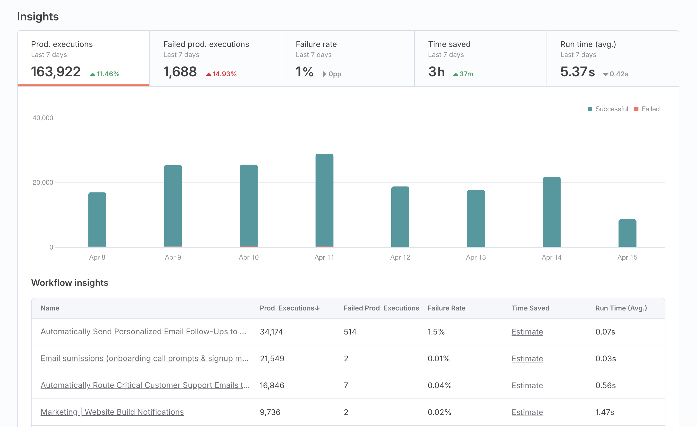
real uiThe rollup: all automations ranked by runs, failures and failure rate with a trend chart. The flow that is quietly erroring at scale surfaces here before anyone complains. source
In the command center: the flow map gets a stats overlay toggle: creators currently waiting at each node, sends per node this week, held count per node (the agent's suppressions made visible), and a red ring on any node whose 7-day sends dropped to zero while its brand stayed active. The n8n-style ranked health table is the home-page abnormality strip's drill-down.
6One creator's path, including her future
Customer.io · HubSpot · n8n
Katie thinks in creators, not cohorts: "which messages will the agent send this person, and when?" The field shows the past well. The piece worth inventing is showing the future inside the thread itself.
Customer.io · Person
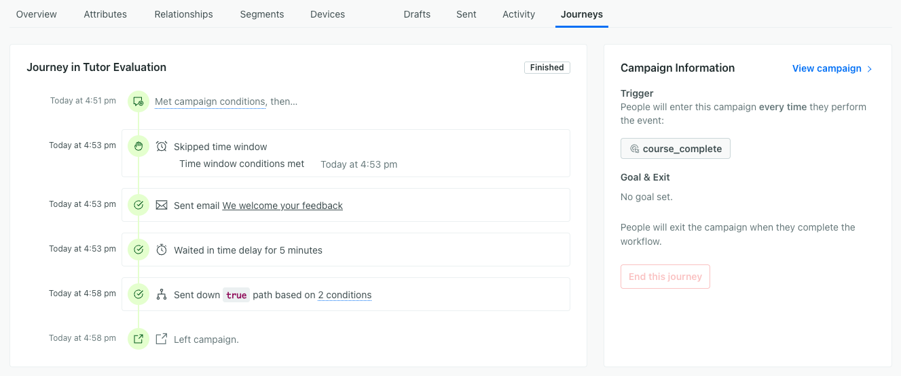
real uiThe per-person play-by-play: a timestamped ledger of exactly which branch she took ("sent down true path based on 2 conditions"), with a one-click "End this journey" kill switch for this one person. source
HubSpot · Enrollment
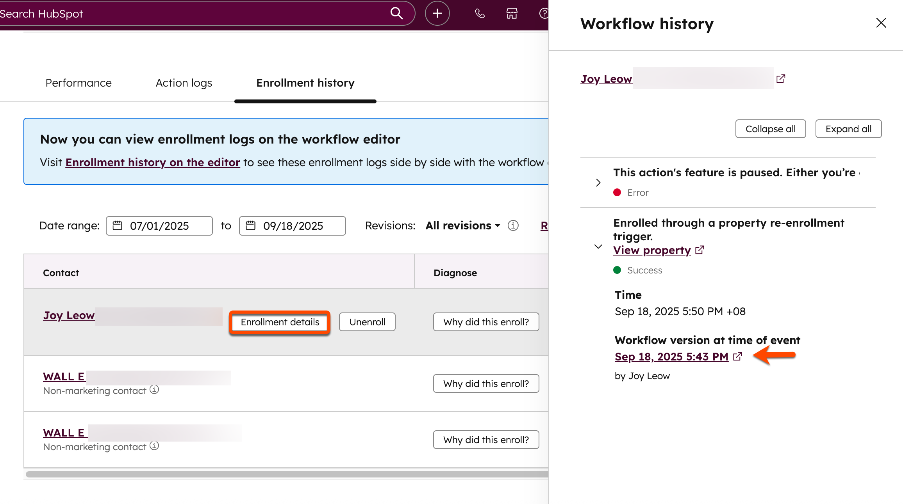
real uiPer-person event trail with green Success and red Error dots, a "Why did this enroll?" explainer, and a link to the workflow version in force at the time of the event. "What did we send her, and why" answered in one pane. source
n8n · Executions
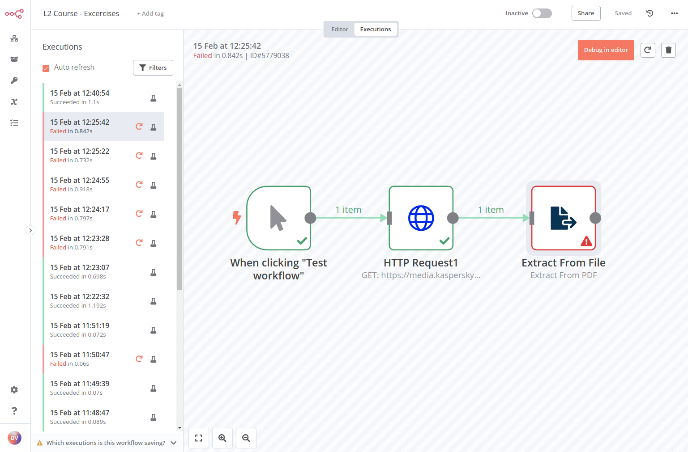
real uiAny single run replayed on the map: green wires with item counts stopping at the red failed node. "Why didn't creator X get her text" is answered by clicking that run, not by reading logs. source
Lauren · MD Solar Sciences · content due Fri
Just got the package, so excited to try!!
Yay! Can't wait to see what you create. Content is due Friday, you've got this!
Queued next
Hi Lauren! Friendly nudge, your MD Solar content is due in 3 days. Need anything from us?
fires Wed 9:00am her time · unless she posts first · hold · edit
Great news, your Celeste product is on the way too!
fires on delivery scan · agent will adapt copy to thread · hold
recreationThe invention worth prototyping: ghost bubbles. The SMS thread shows its own future at the bottom, dimmed and dashed: every queued message for this creator, its fire time, the condition that cancels it, and hold/edit per bubble. The "los" to Lauren fix becomes visible too: update the name and watch the queued bubbles rewrite themselves. This slots directly into Nisarg's new admin first tab (stage history + SMS thread side by side).
In the command center: every creator's thread ends with its ghost bubbles, and the flag card links to them ("this draft, plus 2 more queued behind it"). The per-person ledger reuses HubSpot's success/error dots and "why did this fire" explainer, sourced from the same audit log the send API already writes.
7Rehearsal: prove it before it's armed
Klaviyo · HubSpot · Twilio Studio · Intercom · n8n
The counterpart of shadow mode, for flows: pick a person, run them through, watch the route light up. Every serious system ships a version of this, and it is what turns "I think this automation is right" into "I watched it be right".
Klaviyo · Preview
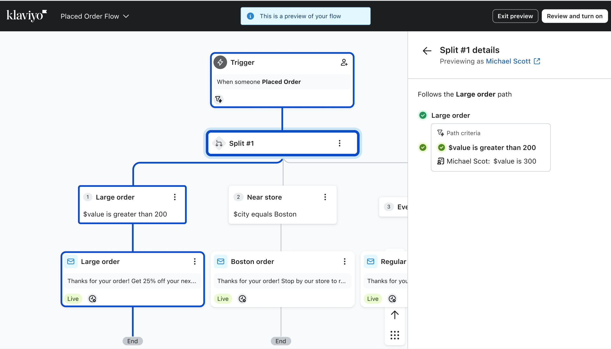
real uiPreview as a specific person: their exact route through the flow highlights in blue, other branches grey out, and the panel proves which condition matched and why ("$value is 300"). source
HubSpot · Test
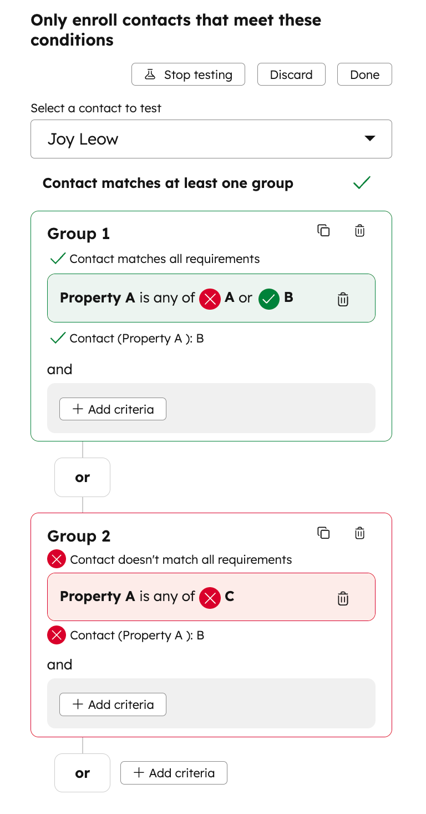
real uiDry-run a real contact against entry criteria: each condition group outlines green or red with per-value check and x marks. "Would we text this person?" answered before going live. source
Twilio Studio
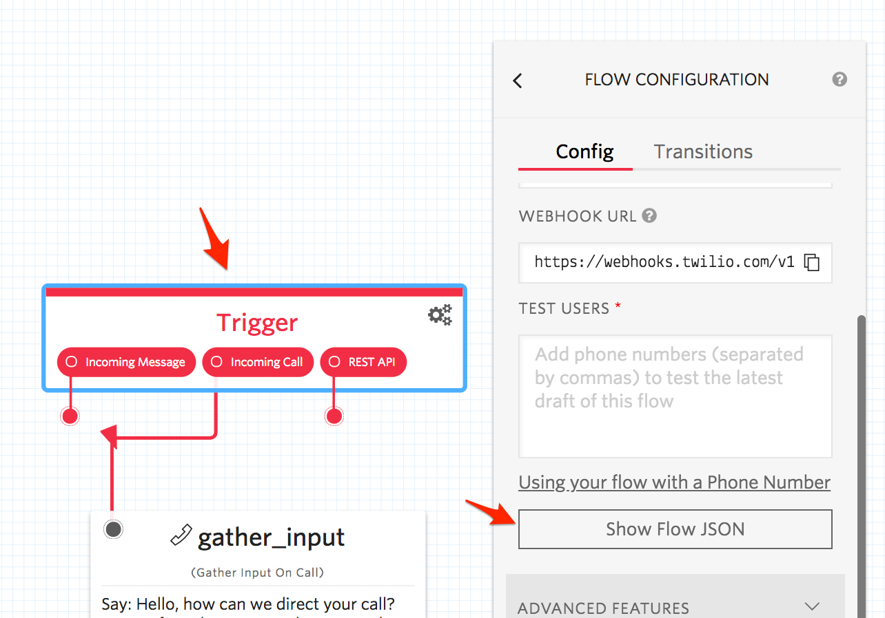
real uiA built-in TEST USERS allowlist: the draft flow fires only at designated phone numbers before publishing. Katie trials the whole sequence on her own phone before a creator can enter it. source
Intercom · Entry rules
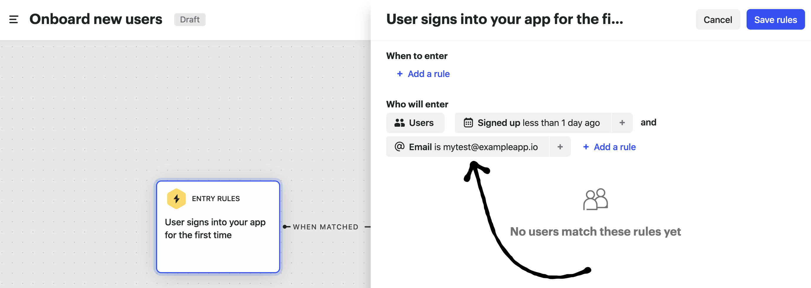
real uiEvery trigger definition paired with a live "who matches right now" preview, pinnable to your own test account. The audience is a fact you check, not a hope. source
n8n · Condition
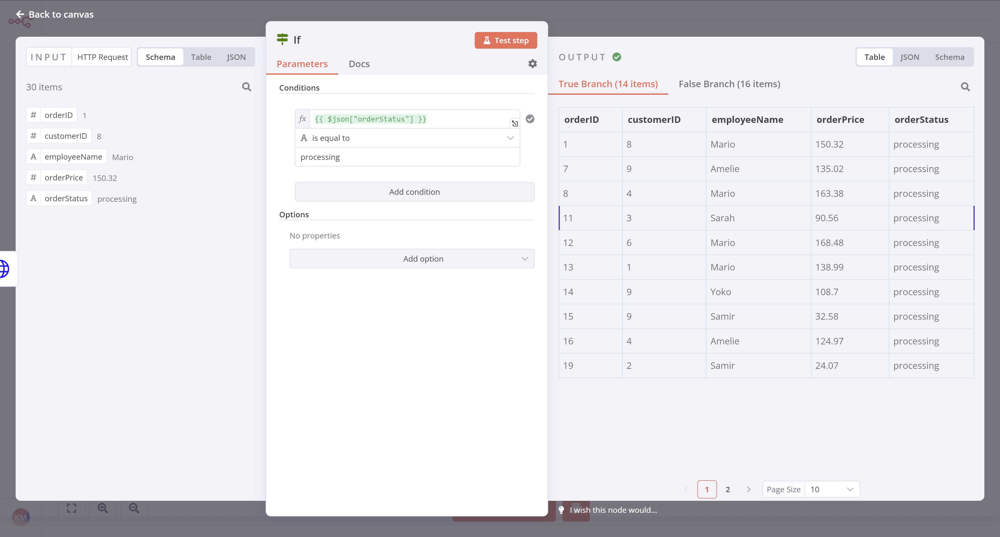
real uiThe moment a condition is edited, the live split shows (14 items true, 16 false) with the actual rows landing in each branch. Editing a rule and seeing its audience are the same act. source
In the command center: the playbook test box from Part 1, extended to flows: pick a real creator, watch her route light up on the map with the matched conditions proven, and a standing test-numbers allowlist (Katie's and Julia's phones) that any draft flow can fire at. Editing a criteria row instantly shows "would match 41 creators across 3 brands".
HOW TO VISUALIZE IT
The answer to "how do we best visualize the pre-scheduled?"
Build four linked views, not one screen. Registry matrix (what exists, per brand), the next-24h queue plus calendar (what fires), the flow map (how it chains), and ghost bubbles (what is coming for this creator). Every view links into the others: matrix cell to map node to queue rows to thread bubbles.
The canvas is generated, never hand-drawn. This is the reconciliation with the Aug 18 no-DSL decision: Brian's dependency graph and the Rails triggers are the source of truth, and the map is rendered from them, like ActiveCampaign's auto-generated Automations Map or n8n's execution view. If the map can drift from reality, it will, and Katie will stop trusting it.
Low-code look, read-heavy, control-light. Katie's edit surface on the map is parameters: pause and resume per automation per brand, timing changes, holds, audiences. Structure changes come from agents and Brian. That is the exact split from the call: she gets "stop this onboarding text for this population" without waiting on anyone, and nobody hand-wires spaghetti.
Nodes are intents, not copy. The agent personalizes wording per thread, so the map shows "3-day reminder" with the base copy's first line, and the per-creator adaptation lives in the ghost bubble. Held counts on nodes make the intelligence layer's suppressions visible instead of spooky.
Waits, exits and quiet hours are drawn, not implied. Wait-until nodes with escape lanes (Customer.io), exit rules in one panel (Attentive), time windows as nodes (OneSignal). Everything that delays or cancels a message is on the picture.
Numbers live on the drawing. Waiting, sent and held per node; counts on branch edges; a red ring for "live but silent 7 days". The map doubles as the abnormality monitor Nisarg called the most important part.
Diffs are first-class. Intercom's purple tint on changed blocks becomes essential once agents edit flows: Katie opens the map and sees what the machine changed since she last looked, with a changelog per automation.
Rehearsal beats review. Preview-as-creator with the route lit up, live audience counts on every criteria edit, and a test-numbers allowlist. No flow arms without having been walked.
Where I would start. Build in the order the views pay off: the registry matrix and the next-24h queue first. Both are renderings of data Rails already has, both would have caught real bugs from the last two weeks (28 Litsea's dead reminders, the instant invite text), and neither depends on Brian's system existing yet. Then ghost bubbles, which ride on Nisarg's new admin creator tab and make the whole system feel trustworthy per creator. The generated flow map comes last, once Brian's dependency graph exists to generate it from, and arrives with counts-on-nodes and the purple diff tint on day one. Worth bringing to the Brian kickoff as the visualization roadmap, alongside Part 1 for the conversation side.